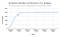

A new Type of financial Risk

Financial actors know that they face several kinds of risk when they are dealing with markets. Systemic risk, execution risk, Credit risk, liquidity risk, asset-backed risk, foreign investment risk, equity risk, and currency risk to name a few of them. All these risks are well known and several models have been built to handle them but there is this newborn risk and every financial player like institution funds, hedge fund, bank and the individual investor must care about it. This new risk is what I am tempted to call the Tribe Risk for lending the word tribe to Seth Godin or you can call it Crowd Risk or Community Risk. This risk is an effect of the evolution of the internet and its ability to connect people and allow them to act in sync. This risk can be defined as the risk of seeing a community of online investors committed to making you lose your investment.
I think that the whole financial industry must care about this Risk and acknowledge it. It just happens that I started studying this risk way before we saw its first incarnation with these short squeeze that the US stock market experienced. This was part of all these ideas around viral capital.
Bellow A preview chart of my coming book about the internet and stock bubbles
